安心就诊
重视消毒灭菌、分区管理与标准化流程，让每一次就诊都更可控、更放心。
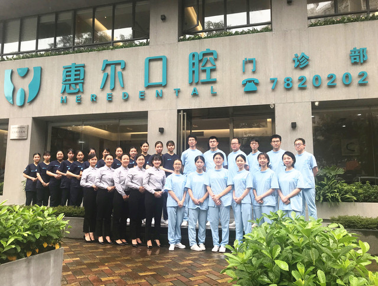
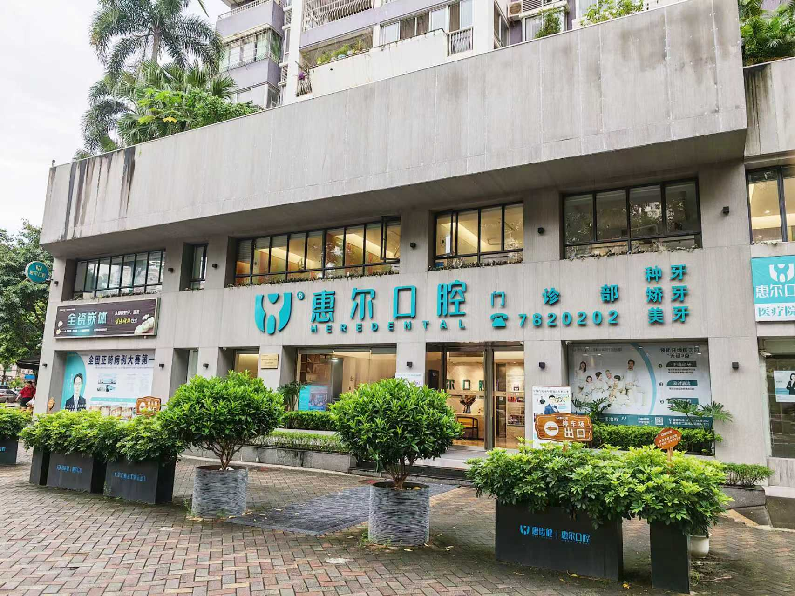
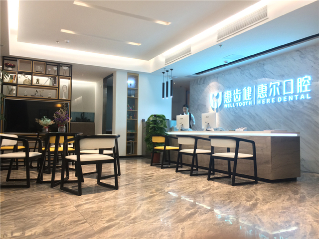
惠尔口腔自2009年成立以来，始终专注于口腔诊疗与口腔健康管理服务， 为儿童、成人及老年患者提供专业、细致、安心的诊疗体验。
诊所位于惠州市惠城区麦地东二路鸿润花园A栋102-106铺， 交通便利、环境整洁舒适，配备规范化诊疗空间，方便周边居民就近获得持续的口腔健康照护。
我们坚持“预防胜于一切的治疗”核心理念，重视早期检查、规范治疗与长期维护， 致力于帮助每一位患者建立科学的口腔护理习惯，让看牙更安心、更高效、更有温度。
以预防为先、以规范为本、以体验为重，建立更长期的口腔健康关系
重视消毒灭菌、分区管理与标准化流程，让每一次就诊都更可控、更放心。
围绕种植、正畸、修复、儿童齿科与综合治疗，提供清晰、规范的个性化方案。
从儿童口腔启蒙到成人长期维护，再到长者缺牙修复，覆盖家庭全生命周期需求。
坚持先检查、再评估、后治疗，让患者清楚理解问题、步骤、材料和维护重点。
独立分区、舒适候诊与影像检查支持，让就诊过程更有秩序也更有温度
我们通过候诊大厅、儿童诊室、影像拍片室、综合治疗室、阅读区与培训空间等多功能场景， 为不同年龄层患者提供更顺畅的就诊体验，也为长期口腔健康管理提供稳定支持。
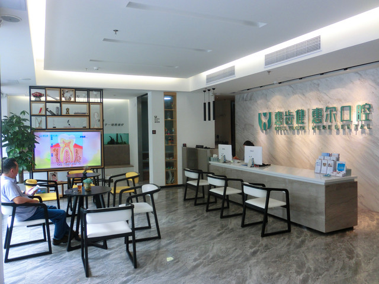
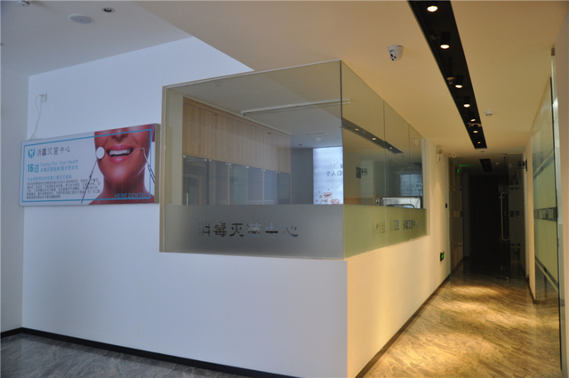
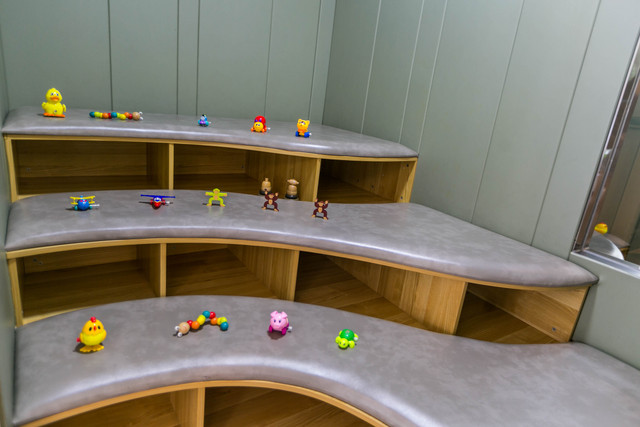

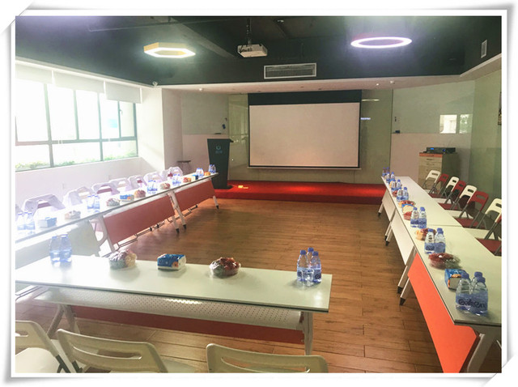
安全感来自流程细节，而不是一句承诺
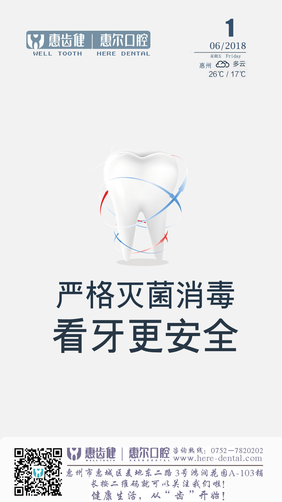
惠尔口腔持续强调安全规范的落地执行，从器械处理、诊室清洁、检查配合到治疗流程衔接， 都以标准化操作为前提，尽可能降低交叉风险，提升患者对诊疗过程的信任感。
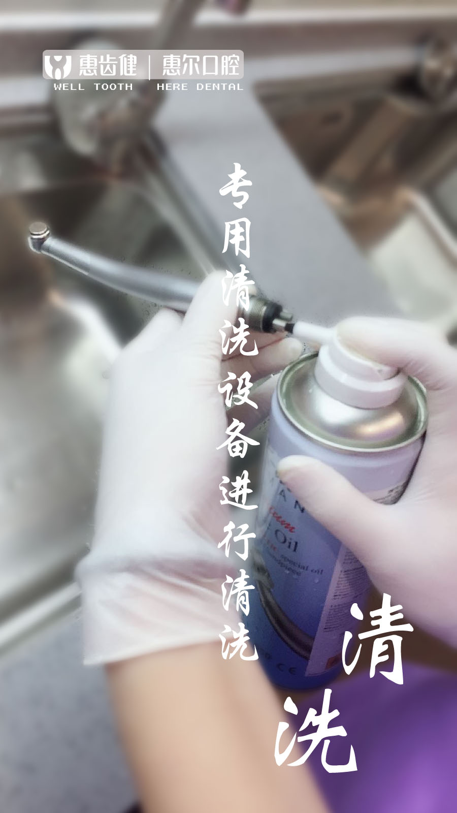
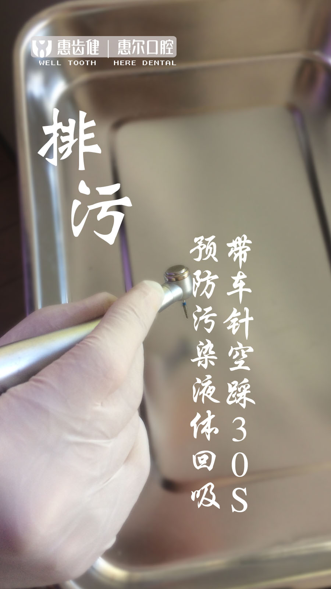
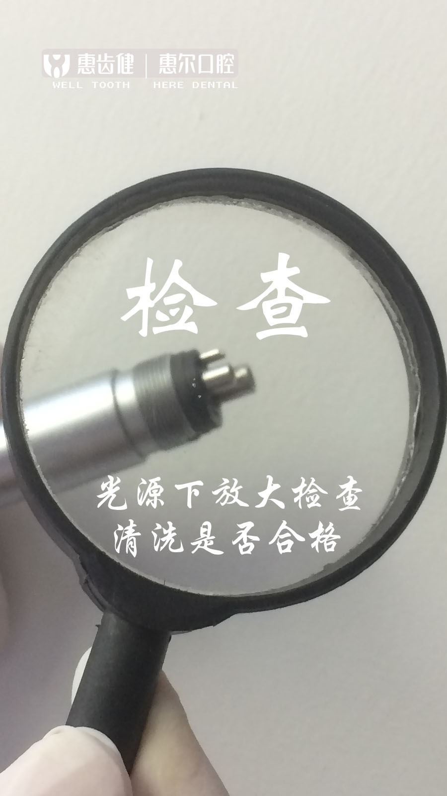
以持续积累的专业成果和行业认可，回应患者对口腔医疗品质的关注
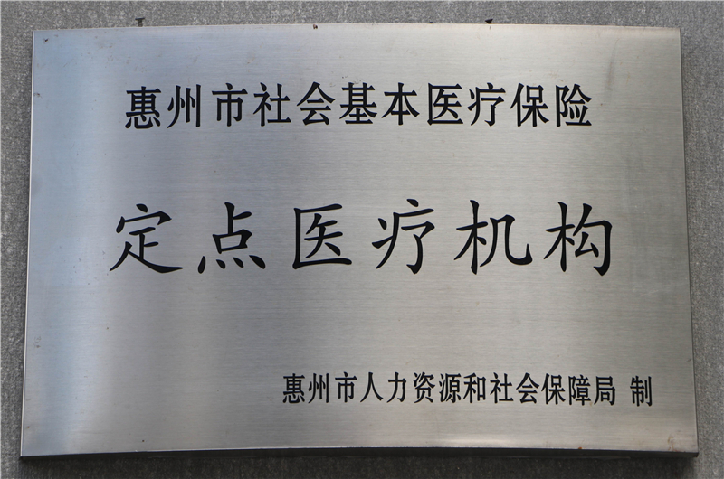
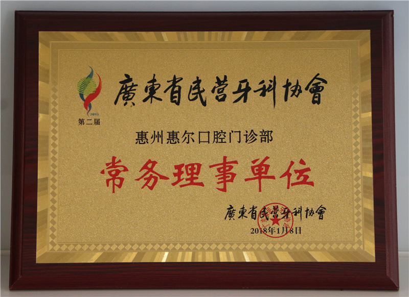
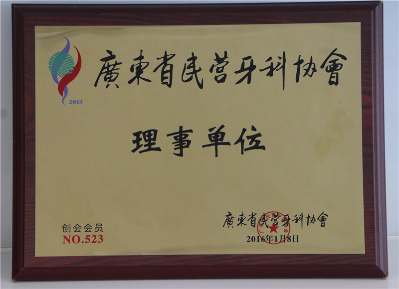
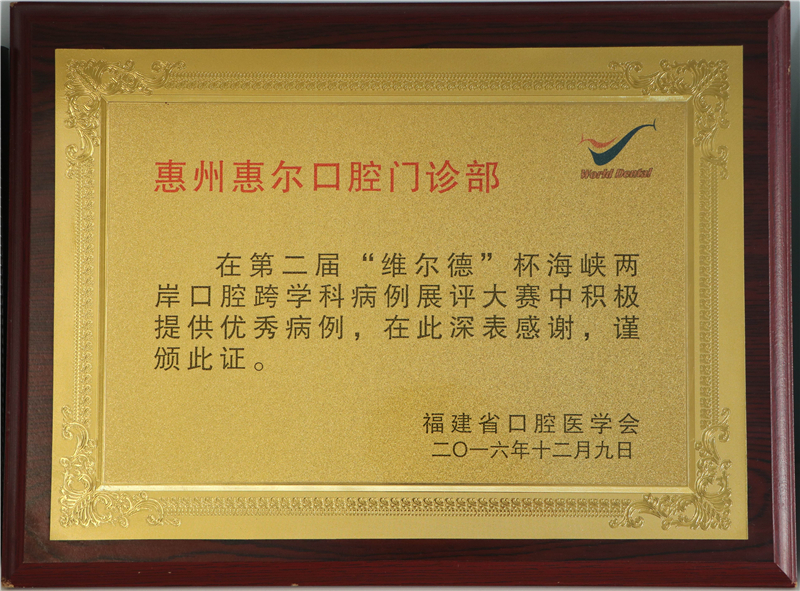
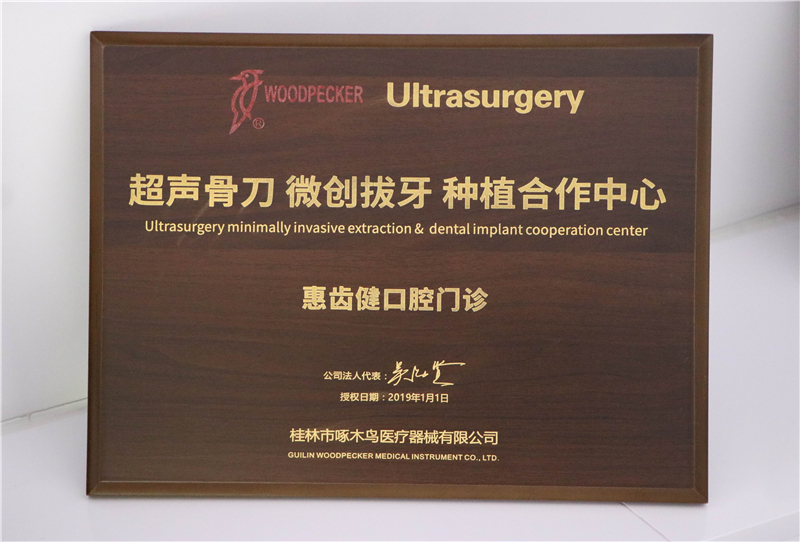
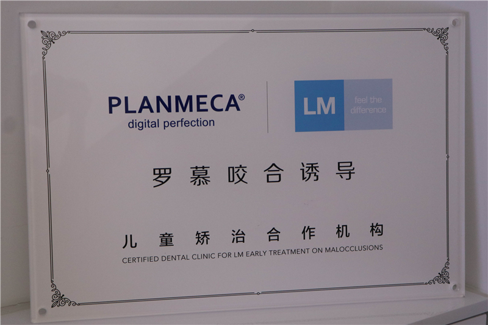